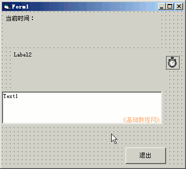
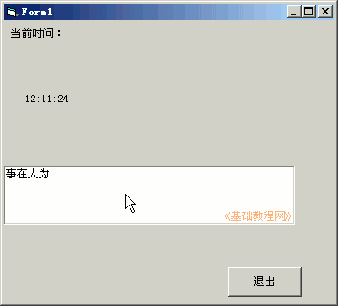

2011-2012 第一学期九年级 VB 教学课程设计
作者：TeliuTe 来源：基础教程网
十二、时钟程序 返回目录 下一课学习目标：学会获取当前系统时间；
注意事项：先把计算机的表调正确；
1、绘制控件
1）打开一个标准EXE，绘制两个标签，一个文本框，一个命令按钮；
Label1的Caption属性改为“当前时间：”
2）设置好控件的字体和颜色；

3）进入代码窗口，点击对象下拉列表，依次选择“Timer1、Command1”，在出来的代码段中分别输入；
4）保存为“第五课”，点菜单“运行－启动”，在文本框中输入内容；

课后记 2011-11-25 16:33：
上次监考做了一个电子表放着给学生看本节学习了时钟程序的基础知识，如果你成功地完成了练习，请继续学习下一课内容；
本教程由86团学校TeliuTe制作|著作权所有
基础教程网：http://teliute.org/
美丽的校园……
转载和引用本站内容，请保留版权信息和本站链接。